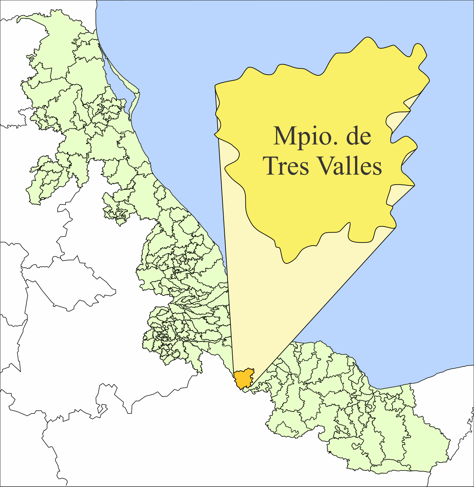

Tres Valles es una pequeña ciudad ubicada en la zona sur del estado de Veracruz, México. Tres Valles se originó como un asentamiento ligado a la industria azucarera y ganadería.
Ahora veremos un poco de los lugares más interesantes a conocer en este bello municipio.

Comencemos con él que se considera que es el mayor distintivo que tenemos es el Tanque Del Agua.
En sus momentos, el tanque del agua fue utilizado por el pequeño pueblo, ahí almacenaban el agua para proveer a sus habitantes, actualmente ya no está en funcionamiento, pero se volvió un icono del municipio, y una gran referencia entre sus ciudadanos.
Seguimos con el lugar que más frecuentan los habitantes de este pueblo, y si, hablo del Famoso Parque Miguel Hidalgo.
En el parque encuentras de todo, desde pequeños emprendimientos como medianos, donde encuentras desde comida, juguetes, cosméticos, bebidas etc. El parque es cede de muchos eventos importantes que suceden en este municipio, los más famosos son: El grito de independencia, Presentaciones de ballet Folclórico, Presentaciones del 20 de noviembre etc.
Pasemos a un lugar muy bonito de Tres Valles, que es La Casa De Cultura, un lugar en donde nace la cultura de este bello municipio, aquí podemos encontrar a su famoso grupo de ballet Folclórico, Su grupo de Ballet clásico, Grupo de música etc.
También cuenta con su cancha de Basquetbol donde en las tardes los chicos practican este bonito deporte.
Vamos con el último lugar de puntos de interés, que es el campo deportivo Salvador Neme, mejor conocido como el chavo neme.